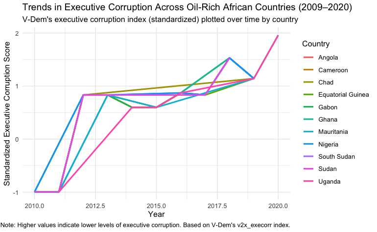
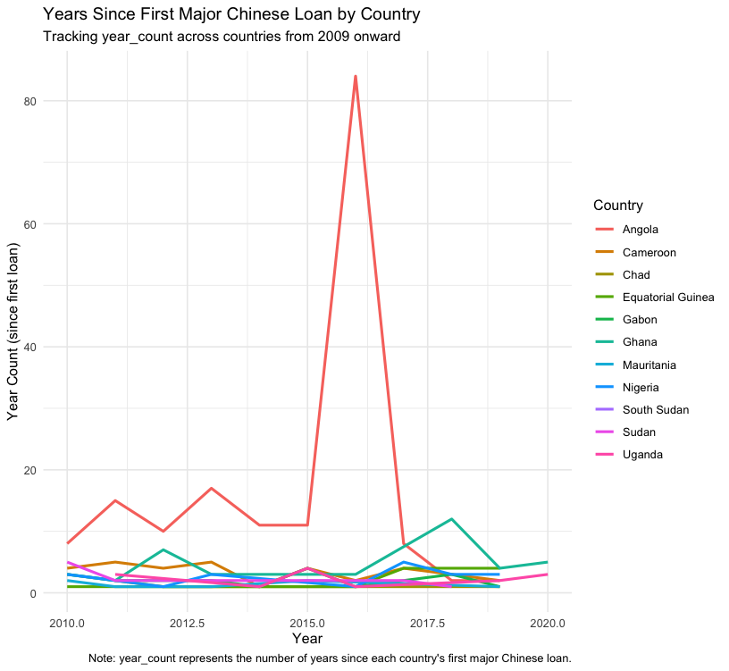
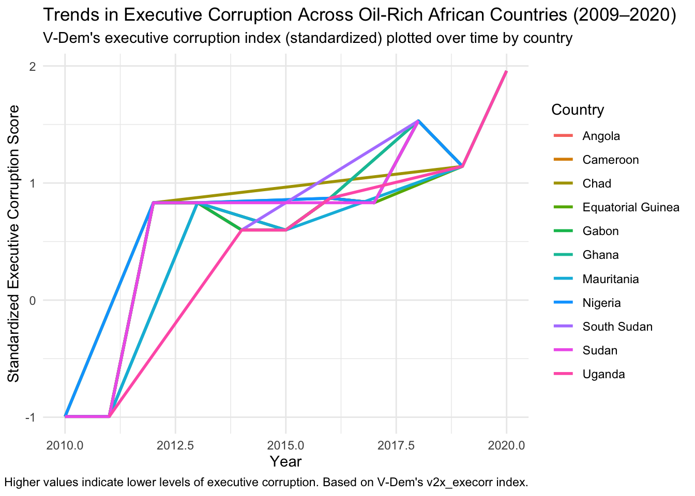
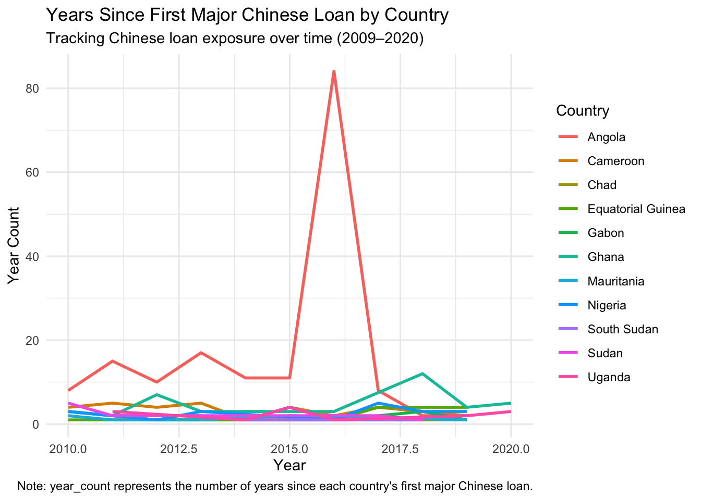

library(haven)
library(tidyverse)
library(readr)
library(tradestatistics)
library(scales)
library(stringr)
library(fixest)
library(httr)
library(jsonlite)
library(dplyr)
library(purrr)
library(comtradr)
library(gt)
book <- read.csv("https://raw.githubusercontent.com/Glucier39/PSCI3200/refs/heads/main/data/how_china_lends_dataset_version_1_0__test/CLA-Database-Raw-Data-Public-2024-FIN.csv")
# V_Dem_CY_Full_Others_v14 <- read_csv("Documents/PSCI3200/data/how_china_lends_dataset_version_1_0__test/V-Dem-CY-FullOthers-v14_csv_YyKfizl/V-Dem-CY-Full+Others-v14.csv")
#
Vdem <- read_csv("https://raw.githubusercontent.com/Glucier39/PSCI3200/refs/heads/main/data/V_Demclean.csv")Expanded Research
Introduction:
Oil-rich African nations have long grappled with the paradox of abundant natural resources and persistent democratic deficits—a phenomenon often referred to as the “resource curse.” While oil wealth holds the promise of accelerated development, it can also foster environments where corruption thrives and authoritarian regimes consolidate power. Extensive scholarship, including studies by Ross (2015) and Dreher et al. (2018), has documented how resource revenues enable ruling elites to bypass institutional constraints, leading to weakened public accountability and entrenched autocracy. Building on these insights, the present study examines a critical yet underexplored dimension: the role of Chinese loans in shaping governance and democratic outcomes in oil-exporting African countries.
In recent years, China has emerged as a major financial actor on the African continent, as “39 Chinese lenders provided 1,243 loans amounting to $170.08 billion to 49 African governments and seven regional institutions” (Boston University Global Development Policy Center, 2023). Compared to traditional loans, Chinese contracts to Africa are shrouded in mystery. Unlike traditional lenders—such as the IMF, USAID, and other multilateral institutions—that typically condition their loans on reforms and transparency measures, Chinese loans are largely unconditional. Most Chinese contracts (especially post-2014) include strict confidentiality terms prohibit borrowers from disclosing loan details. Given their interest in African energy resources, these loans often use oil or mineral revenues as collateral. Finally, these arrangements are unusual in that they can place Chinese lenders ahead of others in line for repayment (i.e., “senior creditor” status) (Gelpern et. al, 2021).
While the “resource curse” has been extensively studied in political economy literature, much of the focus has remained on how oil and mineral wealth distort governance incentives, weaken institutions, and enable authoritarian persistence. Scholars such as Ross (2001) and Auty (1993) have shown how resource-rich governments often circumvent the need for taxation and public accountability by leveraging resource revenues to consolidate political control. In parallel, a growing body of research has examined China’s expanding role as a global lender—particularly its large-scale financing of infrastructure projects across Africa. Studies from AidData and the Center for Global Development (e.g., Gelpern et al., 2021) have demonstrated that Chinese loans are often opaque, lack governance-related conditionality, and are frequently collateralized by future oil revenues. However, the existing literature remains limited in several key respects. Most studies have prioritized the economic and developmental impacts of Chinese financing—such as debt sustainability and infrastructure outcomes—while giving less attention to its political consequences. This research paper expands pre-existing resource curse literature by examining the political impact of Chinese loans on oil-rich countries through the lens of executive corruption, filling a gap in the literature which has often studied and projected the economic consequences of Africa’s debt to China.
Hypothesis:
In oil-rich African countries, higher inflows of Chinese development loans in a given year cause increases in executive corruption.
In this research, “Chinese loans” specifically refer to development loans extended through Chinese state-owned banks or government-backed initiatives. These loans are typically characterized by their unconditional nature, minimal fiscal oversight, and collateral arrangements tied to oil revenues. In contrast, loans from international NGOs and multilateral agencies generally come with strict conditions—such as requirements for infrastructure, education, or healthcare investments—which may promote more transparent governance and, in turn, better democratic outcomes. Oil-rich African states that receive these Chinese loans often differ from those that do not in meaningful ways. These countries may have weaker credit ratings, limited access to traditional lenders, or lower institutional accountability, making them more likely to accept opaque loan terms. They may also hold strategic value to China due to their resource endowments. These factors raise concerns about selection bias, which this study addresses by using a fixed effect model to control for unobserved, time-invariant country characteristics.
Given the many V-Dem indexes, different types of corruption can be studied. For example, while v2x_execorr shows misuse of public office at the top levels, we can also look at petty of bureaucratic corruption or judicial corruption that are theoretically less likely to be affected by large scale financing.
Data:
The datasets used in this analysis merges Chinese loan records from Boston University Global Development Policy Center with measures from the Varieties of Democracy data set.
From the V-Dem data set,I will be using v2x_execorr (measures executive corruption, assessing the misuse of public office by top officials), v2x_pubcorr (evaluates public sector corruption, capturing bribery and favoritism among bureaucrats), and v2x_legcorr (assesses legislative corruption, indicating the extent of bribery or undue influence in the legislature). From the BU dataset, I am using year_count, which is a variable I created by grouping the rows by year and country and counting up how many loans each country recieved. Additionally, I am factoring data from both the World Bank GDP per capita (current US$), Exports of goods and services (% of GDP)) and tradestatistics library as covariates to control for any confounding variables.


The first plot, which tracks standardized executive corruption scores from 2010 to 2020, shows a general upward trend across most countries. Because higher values indicate higer levels of executive corruption, this suggests that governance at the executive level has either worsened or remained stable over time, which appears to challenge the hypothesis. Meanwhile, the second plot, displaying year_count (years since the first major Chinese loan), shows wide variation across countries, with most falling within a reasonable range to test for long-term effects. However, the extreme outlier seen in Angola suggests possible data entry issues or skewed exposure timelines. Finally, the five-number summary table confirms substantial variation in both key variables.
Research Design:
To test the hypothesis that increased Chinese lending leads to higher executive corruption in oil-rich African countries, I will use a fixed-effects Ordinary Least Squares (OLS) regression model. While I will go through the various corruption indexes listed about, the dependent variable I want to focus on the most is the V-Dem executive corruption index (v2x_execorr), The key independent variable is the amount of Chinese loans a country receives in a given year. To account for potential confounders, I will include several covariates: GDP per capita (to control for economic development), oil rents as a percentage of GDP (to account for the resource curse), trade openness (as a proxy for international integration), and lagged democracy scores (to control for historical institutional quality). Country and year fixed effects will be included to control for time-invariant characteristics and common shocks across countries. Although this model is designed to isolate the relationship between Chinese lending and executive corruption, several threats to causal inference remain. I am most worried about reverse causality: countries with weakening governance may attract Chinese loans precisely because they are excluded from more conditional lending sources. Moreover, I need to find more variables to include in my model before I can claim causality.
I would like to test the effects of Chinese lending across different loan sectors (infrastructure, energy, and defense) as an empirical decision. This allows me to address the potential confounder of sector-specific misuse of funds. Energy (especially oil and lng) projects typically involve large budgets, minimal oversight, and high opportunities for rent-seeking or elite capture. In contrast, loans to the social sector are often smaller in scale, more publicly visible, and (in theory) more likely to be done out of desperation or a humanitarian need in a public health crisis or post-conflict. rebuilding period. If corruption increases primarily with opaque, discretionary sectors but not with socially motivated loans—it would suggest that the mechanism behind the corruption effect is not simply the receipt of capital, but how that capital is structured and allocated within a corrupt government.
Code:
Cleaning Loan Data
loans <- book %>%
filter(Country %in% c("Algeria", "Angola", "Cameroon", "Chad", "Congo",
"Congo", "Egypt", "Equatorial Guinea", "Congo, Democratic Republic of the", "Congo, Republic of the",
"Gabon", "Ghana", "Mauritania", "Nigeria",
"South Sudan", "Sudan", "Tunisia", "Uganda")) %>% # filter for Africa
mutate(Country = case_when(
Country == "Congo, Democratic Republic of the" ~ "DRC",
Country == "Congo, Republic of the" ~ "RC",
.default = Country
))
oil_vdem <- Vdem %>%
filter(country_name %in% c("Algeria", "Angola", "Cameroon", "Chad", "Congo",
"Congo", "Egypt", "Equatorial Guinea", "Democratic Republic of the Congo", "Republic of the Congo",
"Gabon", "Ghana", "Mauritania", "Nigeria",
"South Sudan", "Sudan", "Tunisia", "Uganda")) %>%
mutate(country_name = case_when(
country_name == "Democratic Republic of the Congo" ~ "DRC",
country_name == "Republic of the Congo" ~ "RC",
.default = country_name
)) %>% # oil countries
filter() %>%
mutate(year = as.numeric(year)) %>%
filter(year >= 1990)
setdiff(oil_vdem$country_name, loans$Country)# check to see if there's still any differences between the country character(0)comb <- left_join(loans, oil_vdem, by =join_by(Country == country_name)) # check later
comb <- comb %>%
distinct(BU.ID, .keep_all = TRUE) %>%
group_by(Year, Country) %>%
mutate(year_count = n())
comb$execorr_stag <- sapply(comb$Year, function(y) {
match_row <- oil_vdem[oil_vdem$year == y + 1, ] # arb lag
if (nrow(match_row) > 0) {
return(match_row$v2x_execorr[1])
} else {
return(NA)
}
})
comb$execorr_stag_scale <- scale(comb$execorr_stag) World Bank Data
wb <- read_csv("https://raw.githubusercontent.com/Glucier39/PSCI3200/refs/heads/main/data/P_Data_Extract_From_Sustainable_Development_Goals_(SDGs)/892da769-1b4c-4360-a80a-7ca404a4ada8_Series%20-%20Metadata.csv")
colnames(wb) [1] "Series Name" "Series Code" "Country Name" "Country Code"
[5] "2000 [YR2000]" "2001 [YR2001]" "2002 [YR2002]" "2003 [YR2003]"
[9] "2004 [YR2004]" "2005 [YR2005]" "2006 [YR2006]" "2007 [YR2007]"
[13] "2008 [YR2008]" "2009 [YR2009]" "2010 [YR2010]" "2011 [YR2011]"
[17] "2012 [YR2012]" "2013 [YR2013]" "2014 [YR2014]" "2015 [YR2015]"
[21] "2016 [YR2016]" "2017 [YR2017]" "2018 [YR2018]" "2019 [YR2019]"
[25] "2020 [YR2020]"unique(wb$`Series Name`) [1] "GDP per capita (constant 2015 US$)"
[2] "Exports of goods and services (% of GDP)"
[3] "GDP per capita (current US$)"
[4] NA
[5] "Data from database: Sustainable Development Goals (SDGs)"
[6] "Last Updated: 07/22/2022"
[7] "Code"
[8] "NY.GDP.PCAP.KD"
[9] "NE.EXP.GNFS.ZS"
[10] "NY.GDP.PCAP.CD" wb_clean <- wb %>%
mutate(across(matches("^[0-9]{4}"), as.character))
wb_long <- wb_clean %>%
pivot_longer(
cols = matches("^[0-9]{4}"),
names_to = "Year",
values_to = "Value"
)
wb_filtered <- wb_long %>%
filter(`Series Name` %in% c(
"GDP per capita (constant 2015 US$)",
"Exports of goods and services (% of GDP)",
"GDP per capita (current US$)"
))
# Step 3: Pivot wider so each indicator becomes a column
wb_final <- wb_filtered %>%
select(`Country Name`, Year, `Series Name`, Value) %>%
pivot_wider(
names_from = `Series Name`,
values_from = Value
) %>%
mutate(Year = str_extract(Year, "^[0-9]{4}"),
Year = as.numeric(Year))
comb <- left_join(wb_final, comb, by = c("Country Name" = "Country", "Year" = "Year"))
comb <- na.omit(comb) %>%
mutate(log_gdp = log(as.numeric(`GDP per capita (current US$)`)),
export_pec = as.numeric(`Exports of goods and services (% of GDP)`)
)China trade dependency
?tradestatistics
africa_iso3 <- c("dza", "ago", "cmr", "tcd", "cog", "cod", "egy", "gnq",
"gab", "gha", "mrt", "nga", "ssd", "sdn", "tun", "uga")
china_trade_africa <- purrr::map_dfr(
africa_iso3,
~ ots_create_tidy_data(
years = 2000:2021, # use only available years
reporters = .x,
partners = "chn",
table = "yrp"
)
)
china_trade_africa <- china_trade_africa %>%
mutate(country_name = recode(reporter_iso,
"dza" = "Algeria",
"ago" = "Angola",
"cmr" = "Cameroon",
"tcd" = "Chad",
"cog" = "Republic of the Congo",
"cod" = "Democratic Republic of the Congo",
"egy" = "Egypt",
"gnq" = "Equatorial Guinea",
"gab" = "Gabon",
"gha" = "Ghana",
"mrt" = "Mauritania",
"nga" = "Nigeria",
"ssd" = "South Sudan",
"sdn" = "Sudan",
"tun" = "Tunisia",
"uga" = "Uganda"
)) %>%
mutate(trade_value_usd_exp = ifelse(is.na(trade_value_usd_exp), 0, trade_value_usd_exp)) %>%
rename(Country = country_name) %>%
select(Country, trade_value_usd_exp, year)
comb <- left_join(comb, china_trade_africa, by = c("Country Name" = "Country", "year" = "year"))
comb <- comb %>% mutate(log_exp = log(trade_value_usd_exp))
comb$log_exp <- ifelse(comb$log_exp == "-Inf", 0, comb$log_exp)
comb <- comb %>% mutate(Country = `Country Name`) %>% select(-`Country Name`)Plots
comb_post2009 <- comb %>% filter(Year > 2009)
ggplot(comb_post2009, aes(x = Year, y = execorr_stag_scale, color = Country)) +
geom_line(size = 1) +
labs(
title = "Trends in Executive Corruption Across Oil-Rich African Countries (2009–2020)",
subtitle = "V-Dem's executive corruption index (standardized) plotted over time by country",
x = "Year",
y = "Standardized Executive Corruption Score",
color = "Country",
caption = "Note: Higher values indicate lower levels of executive corruption. Based on V-Dem's v2x_execorr index."
) +
theme_minimal()
comb_post2009 <- comb %>% filter(Year > 2009)
summary_combined <- tibble(
Variable = c("execorr_stag_scale", "year_count"),
Min = c(min(comb_post2009$execorr_stag_scale, na.rm = TRUE),
min(comb_post2009$year_count, na.rm = TRUE)),
Q1 = c(quantile(comb_post2009$execorr_stag_scale, 0.25, na.rm = TRUE),
quantile(comb_post2009$year_count, 0.25, na.rm = TRUE)),
Median = c(median(comb_post2009$execorr_stag_scale, na.rm = TRUE),
median(comb_post2009$year_count, na.rm = TRUE)),
Q3 = c(quantile(comb_post2009$execorr_stag_scale, 0.75, na.rm = TRUE),
quantile(comb_post2009$year_count, 0.75, na.rm = TRUE)),
Max = c(max(comb_post2009$execorr_stag_scale, na.rm = TRUE),
max(comb_post2009$year_count, na.rm = TRUE))
) %>%
mutate(across(where(is.numeric), round, 2)) # round all numeric columns to 2 decimal places
# Render the gt table
summary_combined %>%
gt() %>%
tab_header(
title = "Five-Number Summary of Key Variables",
subtitle = "Summary statistics for executive corruption and years since first Chinese loan"
)| Five-Number Summary of Key Variables | |||||
|---|---|---|---|---|---|
| Summary statistics for executive corruption and years since first Chinese loan | |||||
| Variable | Min | Q1 | Median | Q3 | Max |
| execorr_stag_scale | -0.99 | 0.6 | 0.83 | 0.87 | 1.96 |
| year_count | 1.00 | 3.0 | 8.00 | 84.00 | 84.00 |
ggplot(comb_post2009, aes(x = Year, y = year_count, color = Country)) +
geom_line(size = 1) +
labs(
title = "Years Since First Major Chinese Loan by Country",
subtitle = "Tracking Chinese loan exposure over time (2009–2020)",
x = "Year",
y = "Year Count",
color = "Country",
caption = "Note: year_count represents the number of years since each country's first major Chinese loan."
) +
theme_minimal()
Bibliography:
Auty, R. M. (1993). Sustaining Development in Mineral Economies: The Resource Curse Thesis. Routledge.
Boston University Global Development Policy Center. (2023). Chinese Loans to Africa. Retrieved from https://www.bu.edu/gdp
Center for Global Development & AidData. Gelpern, A., Horn, S., Morris, S., Parks, B., & Trebesch, C. (2021). How China Lends: A Rare Look into 100 Debt Contracts with Foreign Governments. https://www.cgdev.org/sites/default/files/how-china-lends-rare-look-100-debt-contracts-foreign-governments.pdf
Dreher, A., Fuchs, A., Hodler, R., Parks, B., Raschky, P., & Tierney, M. J. (2018). African leaders and the geography of China’s foreign assistance. Journal of Development Economics, 140, 44–71.
Ross, M. L. (2001). Does Oil Hinder Democracy? World Politics, 53(3), 325–361.
Ross, M. L. (2015). The Oil Curse: How Petroleum Wealth Shapes the Development of Nations. Princeton University Press.
Varieties of Democracy (V-Dem) Institute. (2024). V-Dem Dataset Version 14. Retrieved from https://github.com/vdeminstitute/vdemdata
AidData. (2021). Global Chinese Development Finance Dataset, Version 3.0. Retrieved from https://www.aiddata.org/data/aiddatas-global-chinese-development-finance-dataset-version-3-0
World Bank. (2022). Sustainable Development Goals (SDGs) Database. Retrieved from https://databank.worldbank.org/source/sustainable-development-goals-(sdgs)